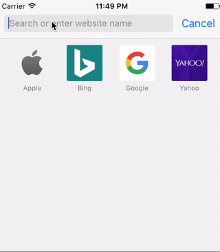

前言
在開發 iOS 的時候，時常會需要測試 dev 及 production 的 API，每次更換 API 就要重新 run 就顯得不是那麼聰明，而且如果 QA 不在身邊的話，難道我只能利用 TestFlight 或是其他工具在 build 給他嗎？ 這長期下來消耗的時間也是很可觀的。
所以，我們可以利用 Deep link 的方式選擇自己想要 API ，只要文字夠複雜的話，就不用擔心使用者誤進了，之後就省下為了換 dev 或 production 而來煩你的時間了！
Code
|
info.plist
|
使用方式
